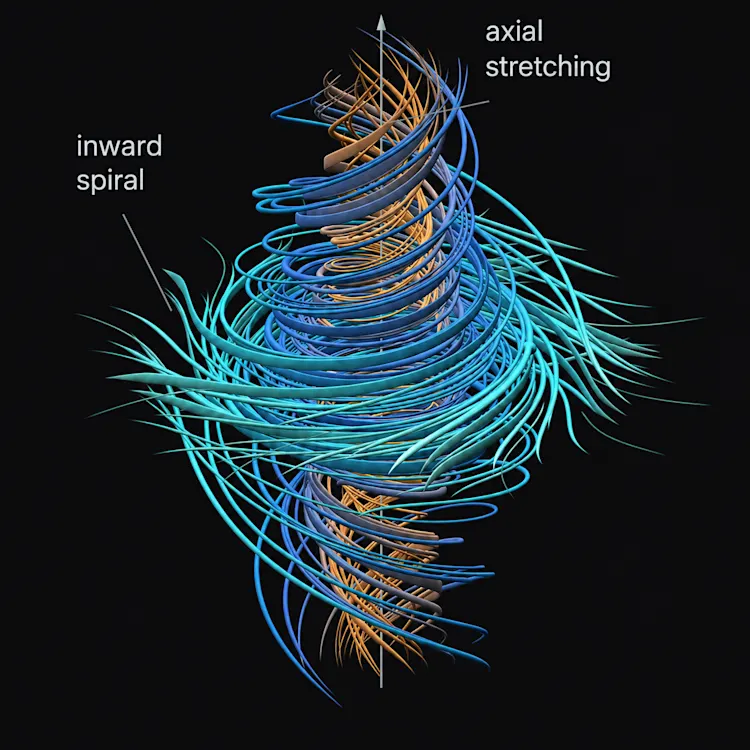

Navier–Stokes, AI, and the Dispute over Credit
Version 02.04 · 2026-11-21
An essay on what was actually announced, why the equations of fluid motion have anything to do with turbulence, why the problem is specifically about three dimensions, what Euler, Lean, Codex, and thousands of agents are doing in this story, and why OpenAI’s breakthrough immediately triggered a dispute over priority, data, and scientific credit. Sources current as of 9 September 2026; Chapters 17–18 as of 21 November 2026.
This essay is long for one simple reason: the story is simultaneously about fluid mechanics, pure mathematics, turbulence, AI, formal proof, user data, and scientific authorship. Leave out any one of those layers and the result is dramatic, tidy, and misleadingly simple.
The shortest version is this: OpenAI published a very serious candidate solution to one of the Millennium Prize Problems, produced by a vast system of AI agents. At the same time, it emerged that another group of mathematicians had spent months developing a closely related research programme with the help of AI, and that OpenAI launched its large-scale “sprint” only after learning that a breakthrough had apparently just occurred somewhere else. There is no public proof that private drafts were stolen, but the marketing version of the story, framed as a self-contained triumph of OpenAI’s models, clearly flattens the history.
1. First, the fluid: what are we actually trying to describe?
Water in a pipe, air around a wing, exhaust gas in a turbine, blood in an artery, and the atmosphere above Europe look like very different things. Mathematically, however, they belong to the same family of problems: we want to describe how velocity, pressure, and other properties of a fluid change at every point in space and at every moment in time.
A fluid is not one solid block. Every part of it interacts with neighbouring parts. It can accelerate, rotate, stretch, compress, mix, and transfer energy between scales. And in most interesting situations the motion is nonlinear: what happens now changes the way the flow will transport itself later.
The equations of fluid mechanics try to compress all of that into a handful of relationships. And this is where one of mathematics’ more perverse stories begins: we can write down the equations, and we can compute useful approximations in practice, yet in three dimensions we still do not know whether perfectly smooth solutions must remain smooth forever.
2. Euler and Navier–Stokes: two descriptions of a fluid
Euler: a fluid without viscosity
The Euler equations describe an idealised fluid in which viscosity, the internal friction between layers of fluid, is neglected. That does not make them “unrealistic”. They are extremely useful when viscosity matters little on the scale of interest, or when we want to isolate the mechanics of motion and vortices without the extra smoothing effect.
Euler is simpler than Navier–Stokes, but not simple in its behaviour. It can generate intricate vortices and extremely sharp structures. That is why it appears here as a proving ground: if a blow-up construction works for Euler, one can try to transplant the underlying idea into Navier–Stokes.
Navier–Stokes: Euler plus viscosity
The Navier–Stokes equations add viscosity to that dynamics. Very roughly, viscosity is a mechanism that dissipates energy and smooths out very small velocity differences. The equation therefore contains two opposing tendencies at once: nonlinear fluid motion can generate increasingly concentrated structures, while viscosity tries to smear them out.
A schematic form of the incompressible equations is:
∂ₜu + (u·∇)u = -∇p + νΔu + f
∇·u = 0
You do not need to know how to read this equation in order to follow the rest of the story.
It is enough to know that u is the fluid velocity field,
p is pressure, ν is viscosity, and f is an external force, or forcing.
The condition ∇·u = 0 means that, in this model, the fluid is incompressible.
3. If the problem is unsolved, how do aeroplanes manage to fly?
This question comes up almost every time, and it is entirely sensible. The Millennium Problem is not “we do not know how to calculate a flow”. We do. Engineering based on Navier–Stokes works every day.
The equations are used, among other things, in:
- the aerodynamics of aircraft and cars,
- turbines, compressors, pumps, and fans,
- pipelines, channels, and industrial installations,
- energy systems, combustion, and cooling,
- meteorology and models of the atmosphere and oceans,
- process engineering, mixers, reactors, separators, and hydrocyclones,
- blood flow and airflow through the human body,
- ship hydrodynamics, waves, and propellers,
- and nearly all of computational fluid dynamics, or CFD.
CFD means computational fluid dynamics. “Computational” here means that we are not searching for a beautiful closed-form formula on a sheet of paper. Instead, we divide space into a huge number of small cells and let a computer approximate the equations step by step.
A typical analysis works like this: first, one builds the geometry, for example a wing or a pipe. Next comes a computational mesh. Then one specifies fluid properties and boundary conditions: inlet velocity, pressure, temperature, viscosity, and so on. A solver, a program that numerically solves the equations, then computes approximate fields of velocity, pressure, and other quantities. Finally, the result is compared with experiment, measurement, or another model.
The fact that we do not have a complete theorem on global regularity in 3D does not prevent us from carrying out finite computations for specific conditions. Likewise, not knowing every possible behaviour of a dynamical system does not stop us from calculating a great many particular trajectories.
4. Turbulence: where a few simple symbols become infernally complicated
Turbulence is chaotic, multiscale fluid motion. Large vortices generate smaller structures; those generate smaller ones still, and energy cascades down through the scales until viscosity dissipates it at the very smallest scales. That cascade is what makes turbulence difficult both physically and computationally.
A real flow can contain, at the same time, a large vortex behind a wing and microscopic structures at which energy is finally converted into heat. If a computer were to resolve every one of those scales without any approximation model, it would need an enormous mesh and a very small time step.
The Reynolds number
The basic dimensionless number describing this competition is the Reynolds number Re.
It compares the importance of flow inertia with the influence of viscosity.
In a simple case:
Re = ρUL/μ = UL/ν
where ρ is density, U a characteristic velocity,
L a characteristic length, μ dynamic viscosity,
and ν kinematic viscosity.
A small Re means viscosity smooths the flow very effectively.
A large Re means inertia dominates and complex vortices and turbulence arise more easily.
There is no single universal transition threshold.
For a simple pipe one often gives, very roughly, laminar flow below Re≈2300,
a transitional range of about 2300–4000, and usually turbulent flow above that,
but those numbers belong to a particular geometry.
As Re increases, so does the range of scales that must be resolved.
That is why direct simulation of every scale becomes extremely expensive.
RANS, LES, and DNS
In practice, three main levels of turbulence modelling are used. RANS mainly computes the mean effect of turbulence and models the additional stresses. LES resolves the larger vortices directly and models the smallest ones. DNS attempts to compute all relevant scales without a turbulence model. DNS is the closest thing to a “complete” numerical solution, but at industrial Reynolds numbers it is usually far too expensive.
5. “A smooth solution” sounds harmless. It is the heart of the problem
When mathematicians speak about smoothness in Navier–Stokes, they are not asking whether the equation itself looks “nice”. They mean the solution: the velocity field, the pressure, and how they change through space and time.
A solution is smooth if it does not develop abrupt mathematical breaks, infinite values, or derivatives that cease to make sense. It may still be extremely complicated and turbulent. Smoothness does not mean simplicity. It means the absence of mathematical catastrophe.
Singularity, loss of regularity, blow-up
A singularity is a point or moment at which the solution ceases to satisfy the required regularity conditions. For example, a gradient may become infinite, or some quantity may grow without bound.
Loss of regularity is the general statement that the solution is no longer sufficiently smooth. Blow-up is a particular mechanism: some norm or quantity becomes unbounded in finite time. These ideas are closely related, but they are not exact synonyms.
In Navier–Stokes, this is not about a physical liquid literally exploding. It is about the possibility that, in finite time, the mathematical description of the flow becomes so sharp that it leaves the class of smooth solutions.
6. Why is the problem about three dimensions if the equation can be written in eighteen?
The Navier–Stokes equations can indeed be written in a general space Rᵈ.
There is no magical number 3 hidden in the notation.
Formally, one can consider one, two, three, four, or eighteen dimensions.
But dimension is not a cosmetic parameter.
It changes the structure of the possible solutions.
1D: almost nowhere to swirl
For the classical incompressible Navier–Stokes equations in one dimension,
the condition ∂ₓu=0 essentially kills the rich spatial dynamics.
It is a degenerate case compared with the flows we know from the physical world.
2D: the problem is gentler
In two dimensions, global regularity of the classical incompressible Navier–Stokes equations is known. Smooth initial data lead to a smooth solution for all time. One of the main reasons is the absence of the full vortex-stretching mechanism.
3D: a vortex can stretch and intensify
In three dimensions, a term appears that is associated with stretching and tilting vorticity. Intuitively, a vortex can be stretched like an elastic cord, and under the right conditions its vorticity can increase. A potential feedback loop emerges: a strong vortex can more readily create conditions for further vortex amplification.
Viscosity pushes in the opposite direction. And that is precisely the drama of the problem: we do not know whether viscosity must always win in 3D, or whether there exists a legitimate configuration in which nonlinear concentration drives the solution to blow-up.
4D and above: mathematically possible, physically a different story
In higher dimensions the equations still make sense as partial differential equations. But the scaling laws and the balance between nonlinearity and dissipation change. In the language of analysis, the problem becomes more supercritical. That is mathematically interesting, but it is no longer the same question as physical three-dimensional flow.
7. What are the Clay Millennium Prize Problems, and why are there four branches, A–D?
In 2000, the Clay Mathematics Institute announced seven exceptionally important open problems in mathematics and named them the Millennium Prize Problems. A prize of one million dollars was attached to each. They are not competition exercises but fundamental problems that resisted the best specialists for decades.
Navier–Stokes is one of them. And there is an important detail: the official formulation does not provide a single route to a solution. It allows four alternatives, labelled A, B, C, and D. A correct proof of any one of them is enough. [S4]
A: prove that everything remains smooth forever in all of space
Start with a smooth 3D flow and no external force. You must show that the solution exists for every later time and never develops a singularity.
B: the same thing in a periodic box
Instead of the whole infinite space, use a three-dimensional torus: a mathematical box whose opposite faces are identified. This removes the issue of behaviour at infinity and focuses attention on the dynamics itself.
C: find one smooth example in all of space that breaks down
Here, a smooth external force is allowed. The task is: construct a legitimate smooth flow and forcing for which regularity is lost in finite time.
D: the same thing in a periodic box
This is the analogue of C on the torus. A smooth forcing is allowed here as well.
In short: A/B try to prove that solutions always remain smooth. C/D try to establish the opposite by producing one valid counterexample.
This matters because after OpenAI’s announcement one objection appeared repeatedly: “they added forcing, so they did not solve the real problem”. In that form, the objection is wrong. Forcing is explicitly permitted in Clay’s official branches C and D. [S4]
Clay status
Even if the proof is correct, that does not yet mean the problem is officially “solved”. Clay requires publication in a qualifying outlet, at least two years of scrutiny, and general acceptance by the global mathematical community. [S5]
OpenAI itself says it does not intend to apply for the Clay prize for this result. [S1]
8. AI enters mathematics: agent, Codex, Lean, token, compute
So much technical jargon appears in this story that it is easy to lose the main thread without sorting out the vocabulary first.
LLM
An LLM, or large language model, is a system trained on an enormous number of examples of text and code, which predicts the next elements of a response and can thereby generate text, code, and chains of reasoning. “Large” refers to the scale of the model, data, and computation, not the size of the window on your screen.
Token
A model does not operate directly on words in the way a human does. Text is split into tokens, small chunks of text. A token may be a whole short word, part of a word, a punctuation mark, or a combination of characters. Token count is therefore an approximate measure of how much text a model has processed or generated. When OpenAI speaks of 130 billion output tokens, it means an absurdly large volume of machine-generated work, not 130 billion “thoughts”.
AI agent
An agent is a separately running instance of a model carrying out a task: it may attempt one proof, search for a counterexample, analyse a lemma, write code, check a result, or summarise the work of other agents. A thousand agents do not mean a thousand different models. They may simply be a thousand separate runs of the same model with different tasks and work histories.
Workflow
A workflow is simply the structure of the work: the order of steps and the way results are passed along. In OpenAI’s experiment, the workflow mattered more than any single prompt: some groups of agents generated ideas, others checked them, Codex consolidated results, and the next wave of agents received better starting material.
Codex
Codex is OpenAI’s agentic environment for working with code, files, and technical tasks. It can write and modify code, run it, read files, inspect results, and carry out longer sequences of work. In this story Codex appears on both sides: Buckmaster and Alpöge used it, and OpenAI also used it in its large-scale experiment to consolidate the work of agents.
Lean
Lean is not a chatbot. It is a formal theorem prover. A proof is written in an extremely precise language, and the computer mechanically checks whether every step follows from previous steps and from the rules of logic.
Formalisation in Lean significantly increases the credibility of a long argument because it eliminates many classes of ordinary human error. It does not, however, automatically settle every interpretive question: one still has to check whether the theorem being formalised is exactly the theorem Clay requires and whether all the assumptions are appropriate.
Compute
Compute is a collective term for computational resources: GPU, TPU, and CPU time, memory, and server infrastructure. A CPU is a conventional processor, a GPU is a processor particularly well suited to highly parallel computation, and a TPU is a specialised accelerator designed for machine-learning workloads.
“To throw a lot of compute at something” simply means: run an enormous number of very expensive computations in parallel.
Cloud, data centre, cache
The cloud is remote computing infrastructure offered as a service. Physically, in practice, that means data centres filled with servers. The word cloud should not be confused with Claude, Anthropic’s model.
When OpenAI refers to a cached version of the internet, it means a previously stored copy of part of the web, not unrestricted browsing of the live internet by every agent.
Repository and API
A repository is an organised collection of project files and their change history, for example on GitHub. OpenAI released a public repository containing the Lean formalisation. An API is a technical interface through which one program can use the service of another; in OpenAI’s data policy, the API has different default training rules from consumer ChatGPT or Codex.
Training a model versus using a trained model
This distinction becomes crucial later. Using a trained model means sending it a prompt and receiving a response. Training means modifying the model’s parameters, before or after deployment, on the basis of data, so that its future responses change.
That is why “the model had no direct access to a private session while solving the problem” and “data from that session could never have affected training” are two different claims. The entire dispute with Buckmaster turns on precisely this distinction.
Sprint
Sprint is not a mathematical term. It means a short, highly intensive period of concentrated work. In OpenAI’s case, it meant a multi-day assault on a set of exceptionally difficult problems using an enormous number of agents and computational resources.
9. Who used which AI
This matters because “AI” in this story is not one device and not one model.
Buckmaster and Alpöge
According to Tristan Buckmaster’s public statement, the private research carried out by him and Levent Alpöge used several models and tools: Anthropic’s Claude, OpenAI’s Codex, GPT‑5.6 Sol, and later models from the Astra family. The models helped with developing arguments, calculations, technical work, and formalisation. Buckmaster also states that every draft of the project was put into their Codex sessions. [S6]
OpenAI
OpenAI used a new internal research model, which the company says was significantly stronger at mathematics than GPT‑6 Astra, thousands of parallel agents, Codex to consolidate results, and GPT‑6 Astra during the later Lean formalisation and verification. [S1]
Córdoba and Martínez-Zoroa
Their earlier work is a crucial part of the genealogy of the mathematical programme. The sources used for this research provide no basis for assigning AI a substantial role in those earlier publications. It should therefore not be retroactively inserted into their work.
10. What actually happened in September 2026
The conflict is easiest to understand if we reconstruct the sequence of events.
For years, Córdoba, Martínez-Zoroa, and their co-authors had been developing finite-time blow-up constructions for related systems and with forcing. In May 2026, Córdoba, Martínez-Zoroa, and Fan Zheng published a paper on hypodissipative Navier–Stokes with forcing. [S9]
For roughly a year, Buckmaster and Alpöge privately developed that programme, making intensive use of LLMs. According to Buckmaster, on 15 August they obtained blow-up with smooth forcing for the Boussinesq and Euler equations, and on 22 August they completed formal verification of their result in Lean. This was not yet the classical Navier–Stokes Millennium Problem. [S6]
On 28 August, OpenAI began training a new internal model. On 1 September, the company heard rumours that two Millennium Prize Problems had been solved. According to OpenAI itself, this became the trigger for a broad experiment across all still-open Millennium Problems and several other difficult problems. [S1]
OpenAI acknowledges that it later identified one of those rumours as being connected to the work of Alpöge and Buckmaster. That is an important fact. It does not prove access to private drafts, but it does mean the organisation did not choose that moment and that target in a complete informational vacuum.
On 3 September, Buckmaster wrote to a mathematician at OpenAI that the rumour probably concerned their work, while withholding the details of the result. By 5 September, according to OpenAI, its system had found a Navier–Stokes solution after about 88 hours of agent work. On 6 September, OpenAI’s Lean formalisation was completed, and on the same day Buckmaster spoke with OpenAI representatives, conversations that later became part of the public dispute. [S1] [S6]
On 7 September, Buckmaster and Alpöge publicly presented their results for simpler systems, and Terence Tao discussed them as a development of the Córdoba–Martínez-Zoroa programme. On 8 September, OpenAI released its full candidate solution to Navier–Stokes, its Lean formalisation, and a description of the process. [S7] [S1]
By 9 September, the story was simultaneously a mathematical event and a dispute over authorship, data, priority, and communication. It was being covered by outlets including Nature, the Financial Times, and Wired. [S10] [S11] [S12]
11. What OpenAI’s proof actually claims
OpenAI published a 166-page paper, Finite Time Blowup for Navier–Stokes, together with a Lean formalisation. This is not a post saying “the model found an interesting observation”. It is a very concrete candidate for a complete proof. [S2]
Stripped of technical language, the main theorem says: for every positive viscosity one can construct a smooth external force and a smooth solution starting from rest, whose energy remains bounded while its velocity becomes unbounded in finite time. This is intended to realise Clay’s official branches C and D.
At the centre of the construction is a vortex that contracts radially, stretches axially, and accelerates.
The difficulty is not merely to force a catastrophe.
If a pathological external force were allowed, the result would be far less interesting.
The whole art is to make the solution lose regularity
while the force f itself remains sufficiently smooth.
OpenAI claims to achieve exactly this through specially constructed oscillations and cancellations.
[S2]

OpenAI’s repository contains formalised theorems corresponding to C and D as well as instructions for independently building the formalisation. [S3]
How large was the experiment?
OpenAI describes roughly 10,000 agents working in parallel on Navier–Stokes. For this problem alone it reports about 2.7 million messages and about 130 billion output tokens. For the experiment as a whole: roughly 4.9 million messages and 300 billion tokens. [S1]
The agents were divided into groups working on variants A, B, C, and D. Separate groups were assigned simpler problems. About one hundred agents reportedly spent roughly 50 hours on unforced 3D Euler. Once a result appeared there, the humans running the experiment judged Navier–Stokes to be the most promising target, shifted compute away from other problems, and passed the Euler result on to further agents.
The groups were then “cross-pollinated”, meaning that results moved between them: Codex synthesised the strongest conclusions from one group and supplied them to others. This matters because it shows that the success was not a single flash of insight from one model, but the product of a very large, iterative research architecture. [S1]
12. Where the idea came from: the genealogy predates OpenAI
On this point the public sources are surprisingly consistent. The underlying programme for constructing blow-up with forcing did not begin either at OpenAI or with Buckmaster and Alpöge.
Buckmaster explicitly credits Diego Córdoba and Luis Martínez-Zoroa with the basic idea. Their earlier work developed singularity mechanisms based on amplification across scales while controlling the regularity of the forcing. Buckmaster and Alpöge took that programme as a starting point and, with very substantial help from LLMs, pushed it to results for Boussinesq and Euler. [S6]
Tao describes their result in much the same way. Moreover, OpenAI’s own 166-page paper cites Córdoba, Martínez-Zoroa, and their co-authors, discussing that work as part of the historical path to its own construction. [S7] [S2]
This leads to an important distinction: the genealogy of the research programme is fairly well established, whereas the provenance of OpenAI’s specific proof remains disputed.
13. The dispute over data and authorship: the part Lean cannot settle
Did OpenAI “steal” the research?
On the public evidence, it would not be responsible to say that this has been proved. Buckmaster himself ends his four-page statement very cautiously: he had not previously seen OpenAI’s proof, does not know exactly what the model did, does not know whether their data were used, and does not claim that he can prove theft or plagiarism. [S6]
That does not make the underlying issue disappear. According to Buckmaster, every draft of their project went into Codex. OpenAI says that its researchers and agents did not have direct access to specific user data while solving the problem. At the same time, the company says it cannot completely rule out the possibility that de-identified data from product use may previously have contributed to model improvement. [S1]
De-identified data are data from which direct user identifiers have been removed or disconnected. That is not the same as saying the data could never have influenced training. This is why the answer “the model did not search private sessions” does not settle the question “could content from such sessions ever have entered the training process?”
Data policy
OpenAI’s current policy says that content from individual ChatGPT and Codex services may be used to train models unless the user opts out through the relevant setting. Codex also has additional controls concerning full environments. For Business, Enterprise, and API products, the default is not to train on inputs and outputs. [S8]
Buckmaster’s exact account settings are not public. So one cannot jump from “such a mechanism can exist” to “his drafts definitely trained this model”.
Three different mechanisms that must not be conflated
- Direct agent access to private sessions while solving the problem. OpenAI denies this.
- User content influencing earlier training or model improvement. OpenAI does not rule out some indirect influence from de-identified data.
- The information that a particular group was close to a breakthrough. OpenAI openly acknowledges that such a rumour triggered the sprint.
Even if the first two points turned out to be entirely innocuous, the third would remain important: information about where it is worth throwing enormous compute right now has research value in its own right.
Levent Alpöge and authorship
According to Buckmaster, during discussions with OpenAI a proposal emerged that he alone should write up OpenAI’s result, with the text stating that the proof had been produced by the model. Buckmaster says Sébastien Bubeck twice wanted Alpöge not to be a co-author of that write-up, pointing to his employment at Anthropic. [S6]
Bubeck later denied that he had wanted to remove Alpöge from authorship of his own work. At the same time, public accounts indicate that he did indeed regard the participation of an employee of rival Anthropic in a write-up of OpenAI’s work as problematic. The distinction is subtle but important: “remove someone from their own paper” and “not include them as a co-author of a write-up of OpenAI’s result” are not the same claim. [S11] [S12]
Pressure
Buckmaster also recounts remarks that can reasonably be read as pressure: “Why would you ruin your career?” and “If you don’t want me to be nice, then I don’t have to be nice.” There is no public recording of the conversation, so this remains one participant’s account rather than an independently recorded fact. [S6]
14. Three public narratives: Olejnik, OpenAI, and Keruac
Łukasz Olejnik: the social consequences first
Olejnik was writing while the story was still at the rumour stage, and he maintained the right level of caution: “there are rumours”, “I don’t know”. His main point was not the correctness of the proof itself, but its consequences: if AI can genuinely participate in a breakthrough of this class, that is a signal about the automation of intellectual work.
This is not yet proof that “a large share of human work will be replaced”. But it resonates interestingly with Buckmaster himself, who describes the rise of LLM-assisted mathematics as a “Deep Blue–Kasparov” moment and points to future consequences for education, peer review, authorship, and research-topic selection. [S6]
OpenAI: a real breakthrough, but a much simpler public story than the underlying reality
OpenAI has an extremely substantial scientific package: 166 pages of proof, Lean, a repository, and a detailed account of the experiment. The company’s full description in fact contains many awkward details: the rumour as a trigger, enormous compute, human orchestration, multiple groups of agents, transfer of results between them, and the prior literature.
The problem is that the marketing message was far more categorical: “our model and agents solved the problem”. For an ordinary reader, the natural picture is straightforward: OpenAI took a famous problem, its model independently found the solution, and the company is the unambiguous owner of the breakthrough. Only someone who works through the longer account, the source papers, and the participants’ dispute sees a much more complicated chronology.
There is no basis, at present, for declaring theft or an unequivocal breach of ethical norms. But it would be equally inadequate to portray OpenAI as a perfectly neutral party. The company’s communication maximised the impression of independent authorship while minimising the complexity of where the direction came from, the role of the rumour, the programme’s earlier genealogy, and the priority dispute. The ethical assessment of that behaviour may remain contested for a long time among historians of mathematics, science, and technology.
Christopher Keruac: a strong factual core, an overly definitive verdict
Keruac’s thread initially reads like a sensational corporate thriller. The surprising part is that many of its details really do come from Buckmaster’s public statement: a year of work, use of Codex, the date of the Euler breakthrough, the rumour, OpenAI’s gigantic compute effort, conversations with Bubeck, the issue around Alpöge, and the remarks about career consequences.
Keruac goes beyond the sources, however, at one crucial point: he turns an unresolved question about the provenance of knowledge into an established “theft of research”. Buckmaster himself does not go that far.
Keruac’s warning that unpublished ideas entered into a commercial AI system may have consequences has a real basis in data policies, but it also requires qualification: the answer depends on the type of service, account, and training settings.
15. What we know, and what we still do not know
We know
- OpenAI published a concrete, long proof and a Lean formalisation.
- The proof targets Clay’s official branches C and D, in which smooth forcing is allowed.
- OpenAI launched the large-scale sprint after hearing a rumour about someone else’s breakthrough.
- Roughly 10,000 agents and an extreme amount of compute were used on Navier–Stokes.
- Buckmaster and Alpöge had spent roughly a year pursuing a closely related research direction with intensive use of LLMs.
- Their programme descends from earlier work by Córdoba and Martínez-Zoroa.
- Buckmaster states that all of their drafts were put into Codex.
- Depending on settings, individual OpenAI services may use content for model training.
- OpenAI does not rule out some indirect contribution of de-identified data to model improvement.
We do not know
- whether Buckmaster and Alpöge’s private drafts actually entered the training data of the specific model OpenAI used;
- whether any such training data had a detectable influence on the solution;
- whether OpenAI would have found the same route without the earlier rumour of a breakthrough;
- whether the 166-page proof will survive years of independent scrutiny without a substantial gap;
- how historians of mathematics and the scientific community will ultimately apportion priority, authorship, and credit.
16. Why this story may matter even more than Navier–Stokes itself
First: mathematics
If the proof survives full scrutiny, it will be a solution to one of the most famous open problems in mathematics with an AI system playing a fundamental role. That alone would be historic.
Second: a new scale of research
The largest change may not be that the model “is smart”. It may be that an organisation can launch thousands of parallel research paths, select results, redirect resources into the most promising branches, and formalise the strongest arguments on a timescale of days.
That is a different mode of research from the familiar “mathematician plus AI assistant”. It looks more like a factory for hypotheses and proofs, in which humans manage research directions while a huge number of agents search the space of possible solutions at industrial scale.
Third: knowing where to look becomes an asset
In traditional science, a large part of the work consists in discovering which direction is worth pursuing in the first place. If someone spends a year discovering that a particular construction probably leads to a breakthrough, the mere information “they are close, and they are close here” has value.
In a world of massed agents, that value rises dramatically. An organisation with enough compute can receive such a signal and search thousands of variants in a few days. Even without any access to a private document, it can exploit information about the value of the direction.
Fourth: authorship stops being obvious
Who is the author of a result if: one person invented the research programme, a second team developed it for a year with several LLMs, a company heard that a breakthrough had occurred, then thousands of its agents generated a different complete proof, and Lean formally checked it?
Existing academic norms were not designed for this case. That is why the answer cannot be reduced to “AI is the author” or “AI is only a calculator”.
Fifth: tool privacy becomes part of scientific methodology
A researcher using AI on unpublished work now has to understand more than mathematics. They need to know what product they are using, whether the data may be used for training, whether an opt-out exists, whether they are working through an API, Enterprise, or a consumer service, and how to maintain a credible chronology of their discoveries.
One can call this opsec, operational security, but in this context it simply means protecting unpublished ideas, data, and information about the direction of research.
The shortest honest version of the whole story
OpenAI published a serious and formally verified candidate solution to Navier–Stokes. The AI system genuinely performed a vast amount of creative and formal work. But this was not a solitary model solving the problem from a blank page: the result emerged from a managed, massive experiment launched after news of another group’s breakthrough, against the background of an earlier mathematical programme developed by other researchers.
There is no public proof that OpenAI used Buckmaster and Alpöge’s private drafts, but there are real unresolved questions about training data, about how priority should be assigned, and about whether the company’s marketing adequately represented the genealogy of the result.
The largest change may not be that AI “solved one equation”, but that science has entered an era in which thousands of agents can search a research space in a matter of days, while information about where to look becomes almost as valuable as the draft proof itself.
17. What happened next: progress up to 21 November 2026
Chapters 1–16 describe the state of affairs on 9 September. This chapter was added later. It does not revise that account; it shows how the story unfolded over the following ten weeks. One-sentence summary: the September race did not end with OpenAI. Two and a half months later, the same pair who had “lost” in September announced a result for the version without an external force, the one most people had been asking about from the start.
September: an investigation, Clay, and a letter from Fields Medalists
The first days after the announcement felt like a cross-examination. On 10 September OpenAI announced that, following an internal investigation, it had confirmed that Buckmaster’s Codex prompts from the preceding two months could not have influenced the system, including through training. On 13 September it narrowed that claim to inputs after 3 July. Commentators noted that this left the question of his earlier, heavy Codex use unanswered. On the same 10 September, Córdoba said publicly that if his group’s work had not existed, AI would not have solved the problem. [S13]
On 11 September the Clay Mathematics Institute wrote that the problem had “apparently been settled”, but that its verification and credit process is “deliberately unhurried”. The same day, 24 Fields Medalists published the open letter “A Severe Misalignment of AI in Mathematics”. Four more signed it later. [S13] [S14]
October: Lean checks out, but not everything does
Independent users rebuilt OpenAI’s formalization from scratch. It passed Comparator, a tool for judging untrusted Lean proofs, and two independent kernels, and it uses only Lean’s three standard axioms. [S15] In other words, as a theorem in Lean, the result is correct.
On 6 October, however, Bastounis, Circelli, and Hansen published “Navier–Stokes lost in translation”, documenting discrepancies between the Lean version and the natural-language proof. [S16] This is exactly the problem described in Chapter 8: Lean checks that the conclusion follows from the assumptions, but not that the right assumptions and the right conclusion were written down. On 13 October Scientific American surveyed mathematicians and concluded that the resemblance between the methods of OpenAI and of Buckmaster–Alpöge is “merely skin-deep”. [S13] That weakens the strongest version of the suspicions in Chapter 13, but it does not settle the dispute over who first pointed in the right direction.
As an aside: on 6 October OpenAI announced another batch of 377 results. The most prominent was a proof of the quasi-Riemann hypothesis, a weaker form of the Riemann hypothesis. [S17] The September pace turned out to be the norm, not the exception.
20 November: three results in one day
Terence Tao ranked that day’s announcements by how well “digested” they already are, stressing that the ranking is not a verdict on correctness. [S18]
- Unforced Euler (Alpöge, Buckmaster, Coiculescu). A human-readable proof of blow-up for the three-dimensional Euler equations, written with heavy AI assistance and formalized in Lean.
- Unforced Navier–Stokes (Alpöge, Buckmaster). A 79-page paper and about 600,000 lines of Lean in about 2,270 files. [S19]
- The generalized Riemann hypothesis (Alpöge). A separate story: the proof exists only in Lean, runs to about 17 million lines, and its human-readable version is over 250,000 pages long and, by the author’s own account, unreadable. [S20]
For this essay, item 2 is what matters. Chapter 7 explained that the official branches C and D allow a smooth external force, so formally OpenAI’s September result may already have “solved” the problem. For most mathematicians and physicists, though, the real question had always been whether a fluid that nobody is pushing can develop a singularity on its own. If the new paper holds up, the answer is yes.
What the new proof actually claims
The solution starts from smooth data and stays smooth until a finite time T. At that moment it blows up at the rate (T−t)−1/4 and, in self-similar variables, converges to a specific profile. [S19] The rate (T−t)−1/4 is no accident: it is exactly the lower bound Jean Leray derived in 1934. The singularity forms as slowly as is possible at all.
The proof has two parts. The first is a conditional theorem: if a smooth, “backward discretely self-similar” solution exists, blow-up follows. The second shows that such a solution exists, using a numerically computed approximation which the authors call a certificate and which satisfies a set of explicit inequalities. The strategy resembles earlier computer-assisted work by Hou and Chen on Euler blow-up. [S21] Tao describes it as the expected approach: first build an approximate solution numerically, then use rigorous perturbation theory to turn it into an exact one. [S18]
Who used which AI — Chapter 9 continued
The authors write that they used Claude and Codex throughout. According to the paper, Anthropic’s models wrote the first unforced proof from the pair’s earlier drafts. The authors then reworked and restructured it with Claude and Codex, replacing some parts with their own ideas. [S21] So Codex, the OpenAI tool at the centre of the September data dispute, was this time helping the other side.
Buckmaster was frank about the haste: “after last time, we couldn’t risk waiting”. That is why, as he admitted, the Navier–Stokes write-up is unpolished and heavily LLM-assisted. [S21] The thesis of Chapter 16, that knowing where to look becomes an asset, has now been confirmed in practice. Researchers publish sooner than they would like, because they have good reason to fear being scooped.
What is still missing
- The key numerical certificate has not been released. The paper gives only its cryptographic hash and says it will be released “soon”.
- The rigorous interval-arithmetic computation (128-bit precision, the Arb library in FLINT) that checks the certificate is not part of the Lean formalization or of the repository.
- A 20 November patch changed some of the Lean statements and the proofs depending on them, and the package was not rebuilt after the patch.
- The paper has not been peer reviewed. Tao writes that more work is needed before there is a “proper, professionally written proof”.
The October lesson applies here too: a green Lean build is a lot, but it is not everything. In this case the most important part, the numbers on which the existence of the profile rests, currently sits outside Lean.
The shortest honest version — as of 21 November 2026
In September OpenAI showed blow-up with a smooth external force: formally within Clay’s rules, but not what everyone was asking. Its Lean code compiles, but at least one paper charges it with errors in translation from natural language. In November the pair who had lost the September race announced blow-up with no external force at all, with help from Claude and Codex, formalized in Lean, but without the numerical certificate published yet.
If this result holds up, the dispute over who first solved the Navier–Stokes problem will not go away; it will shift. The question will stop being “who was first” and become “who solved which problem”. Clay has an exceptionally “unhurried” process ahead of it.
18. As if Navier–Stokes were not enough: the same man and the Riemann hypothesis
If this were a detective novel, the reader would throw the book at the wall here: too many coincidences. On the morning of 20 November, Alpöge and Buckmaster publish a proof of unforced Navier–Stokes blow-up. The same day Levent Alpöge — the very man OpenAI did not want among the authors of a write-up in September because he works at Anthropic (Chapter 13) — posts a four-page note on his website that opens with the sentence: “I believe I have, working with Claude, discovered a proof of the Riemann Hypothesis”. [S20] All this in the same week that Anthropic debuted on the Nasdaq. [S22]
The case file
- What was announced. A proof of the generalized Riemann hypothesis (GRH), a stronger statement of which the classical Riemann hypothesis is a special case. The hypothesis concerns the distribution of prime numbers and has been open since 1859. [S20]
- Exhibit A. About 17 million lines of Lean code, which the author says contain a formal verification. [S20]
- Exhibit B, which does not exist. Attempts to get a human-readable text out of Claude produced over 250,000 pages, so the author has not released it. [S20]
- Division of labour. By Alpöge’s account, he chose the direction and Claude did much of the hard technical work, especially towards the end, where, he writes, the AI “far outpaced” him. [S23]
- First expert opinion. Tao calls it an enormous Lean-only proof. Verification is best followed in a Lean Zulip thread. His very initial analysis suggests the proof draws on the full power of the modern Langlands program and arithmetic geometry, and he expects digesting it to take some time. [S18]
- A clue from the past. In August Anthropic described how Claude took a stab at the Riemann hypothesis and did not prove it, but along the way raised the lower bound on the fraction of zeros on the critical line from 41.6% to 67.2%. The company wrote plainly that it did not expect those techniques to lead to a proof. [S24] Three months later they did. Or other techniques did. The investigation continues.
One thing matters for this story: the September dispute over whether an AI-company employee can be an author of a result produced with someone else’s model is now reversed, as in a mirror. An AI-company employee announces a result produced with his company’s own model, in the week of its stock-market debut. All the questions of Chapter 16 — authorship, priority, and who has an interest in the announcement — come back. Only the sides have changed.
How much is that? A unit of measure: 1 Proust
The numbers in this story are so large that pages stop meaning anything. We need a unit on a human scale.
1 Proust is the length of Marcel Proust’s In Search of Lost Time: according to Guinness World Records the longest novel in the world, at about 9,609,000 characters, with every letter and every space counted as one character. [S25] That is about 5,340 standard pages (1,800 characters each) and roughly 89 hours of reading at novel pace. Auxiliary unit: 1 milliProust (mP) is about 9,600 characters, a little over 5 standard pages.
Assumptions: a page of mathematical text has about 3,000 characters, a line of Lean code about 40 characters (including indentation), a novel is read at about one standard page per minute, and research mathematics is read with understanding at about 2 pages a day. The results are orders of magnitude, not measurements.
| proof | size | Prousts | read like a novel | read like mathematics (2 pp./day) |
|---|---|---|---|---|
| Wiles, Fermat’s Last Theorem (1995) | ~129 pages | ~40 mP | ~3.5 h | ~2 months |
| OpenAI, forced Navier–Stokes (September) | 166 pages | ~52 mP | ~4.5 h | ~3 months |
| Alpöge–Buckmaster, unforced Navier–Stokes, text | 79 pages | ~25 mP | ~2 h | ~1.5 months |
| Alpöge–Buckmaster, Navier–Stokes, Lean | ~600k lines | ~2.5 P | ~220 h | — |
| Alpöge + Claude, GRH, Lean | ~17M lines | ~71 P | ~6,300 h | — |
| Alpöge + Claude, GRH, unreleased “human” text | >250k pages | ~78 P | ~6,950 h (~3.5 working years) | ~340 years |
The conclusion is simple. On this scale the longest novel in the history of literature is a trifle: the “human” version of the Riemann proof is about 78 complete Prousts. A mathematician reading it at the pace mathematics is read would have had to start around the reign of Augustus II the Strong to finish today. Reviewers should therefore write their reviews and their wills — their last will and testament — in parallel, since the chances of finishing the former before needing the latter are slim. The classic question of Chapter 15 — “will the proof survive years of independent verification?” — changes meaning here. It cannot be checked the way a book is read, only the way a program is checked: with a compiler, and then by judging whether the right theorem was written down.
The shortest honest version of this chapter
On the same day a second Navier–Stokes proof was announced, the same mathematician announced a proof of the generalized Riemann hypothesis, made with Claude and written only in Lean: about 71 Prousts of code, with no readable text. It may be the greatest result in the history of mathematics, or the most expensive mistake in a definition. For now all we know is that nobody will read it like a book, and independent verification has only just begun.
19. Sources
- [S1] OpenAI — “On the Navier–Stokes Millennium Prize Problem”, 8 September 2026.
Official description of the result, agent workflow, agent and token counts, sprint chronology, and the company’s position on data and the Buckmaster–Alpöge team.
https://openai.com/index/navier-stokes-solution/ - [S2] OpenAI — “Finite Time Blowup for Navier–Stokes”, 166 pages.
Full candidate proof, main theorem, blow-up construction, and the history of earlier work.
https://cdn.openai.com/pdf/32d9f210-8b73-45e0-91bc-82a30aef8a9a/navier-stokes.pdf - [S3] OpenAI — Lean repository “NavierStokesAndEuler”.
Formalisation of theorems corresponding to branches C and D, with instructions for independent verification.
https://github.com/openai/NavierStokesAndEuler - [S4] Charles L. Fefferman / Clay Mathematics Institute — official formulation of the Navier–Stokes problem.
Definitions of alternatives A, B, C, and D.
https://www.claymath.org/wp-content/uploads/2022/06/navierstokes.pdf - [S5] Clay Mathematics Institute — Rules for the Millennium Prize Problems.
Conditions for formal recognition of a solution.
https://www.claymath.org/millennium-problems/rules/ - [S6] Tristan Buckmaster — public statement.
The main primary source on his collaboration with Alpöge, the LLMs they used, dates, Codex, conversations with OpenAI, authorship, and data questions.
https://cims.nyu.edu/~tristanb/statement.pdf - [S7] Terence Tao — discussion of the Alpöge–Buckmaster results, 7 September 2026.
Independent discussion of their results and their relationship to the earlier Córdoba–Martínez-Zoroa programme.
https://terrytao.wordpress.com/2026/09/07/finite-time-blowup-with-smooth-forcing-term-for-the-incompressible-porous-medium-boussinesq-and-incompressible-euler-equations/ - [S8] OpenAI Help Center — policy on using data to improve models.
Differences between individual services, opt-out, Codex, Business/Enterprise, and the API.
https://help.openai.com/en/articles/5722486-api-data-usage-policies - [S9] Córdoba, Martínez-Zoroa, Zheng — Archive for Rational Mechanics and Analysis, 2026.
Earlier public work on finite-time blow-up for hypodissipative Navier–Stokes with forcing.
https://link.springer.com/article/10.1007/s00205-026-02198-0 - [S10] Nature — report on OpenAI’s breakthrough.
https://www.nature.com/articles/d41586-026-02842-5 - [S11] Financial Times — dispute over priority and authorship.
https://www.ft.com/content/4d6d28a0-4b12-438e-8850-4b3d49fc57f5 - [S12] Wired — dispute over data, compute, and authorship.
https://www.wired.com/story/openai-navier-stokes-math-discovery-academics - [S13] Wikipedia — “Navier–Stokes priority controversy”.
September–October timeline: OpenAI’s investigation, Clay’s statement, the Fields Medalists’ letter, criticism of the formalization, Scientific American’s findings.
https://en.wikipedia.org/wiki/Navier%E2%80%93Stokes_priority_controversy - [S14] A. Avila et al. — “A Severe Misalignment of AI in Mathematics”, 11 Sept 2026.
Open letter by Fields Medalists.
https://doi.org/10.5281/zenodo.22737750 - [S15] incrediblecrab — “learning-navier-stokes”.
Independent rebuild of OpenAI’s formalization: Comparator, two kernels, three standard axioms.
https://github.com/incrediblecrab/learning-navier-stokes - [S16] Bastounis, Circelli, Hansen — “Navier-Stokes lost in translation”, arXiv:2610.08144.
Discrepancies between the Lean proof and the natural-language proof.
https://arxiv.org/abs/2610.08144 - [S17] Quanta Magazine — “AI Proved the Quasi-Riemann Hypothesis. What Happens Now?”, 19 Oct 2026.
https://quantamagazine.org/ai-proved-the-quasi-riemann-hypothesis-what-happens-now-20261019 - [S18] Terence Tao — “Unforced Euler singularity, unforced Navier-Stokes singularity, and the Generalized Riemann Hypothesis”, 20 Nov 2026.
https://terrytao.wordpress.com/2026/11/20/unforced-euler-singularity-unforced-navier-stokes-singularity-and-the-generalized-riemann-hypothesis/ - [S19] L. Alpöge, T. Buckmaster — “Finite-time blow-up for the Navier–Stokes equations”, 79 pages, 20 Nov 2026, with a Lean formalization.
https://github.com/tristanbuckmaster/navier-stokes/ - [S20] Quanta Magazine — “A claimed proof of the Riemann hypothesis”, 20 Nov 2026.
https://www.quantamagazine.org/updates/transformation/ - [S21] OfficeChai — “Tristan Buckmaster, Levent Alpöge Claim Proof Of Navier-Stokes Millennium Prize Problem Without Forcing”, 20 Nov 2026.
Structure of the proof, the certificate, models used (Claude, Codex), verification status.
https://officechai.com/ai/tristan-buckmaster-levent-alpoge-claim-proof-of-navier-stokes-millennium-prize-problem-without-forcing/ - [S22] Tom’s Hardware — “Anthropic mathematician claims to have solved 167-year-old math problem with Claude”, 20 Nov 2026.
https://www.tomshardware.com/tech-industry/artificial-intelligence/anthropic-mathematician-claims-to-have-solved-167-year-old-math-problem-with-claude-riemann-hypothesis-proof-allegedly-discovered-but-remains-unconfirmed - [S23] Nacionale — “How does Alpöge say Claude helped with his Riemann hypothesis proof claim?”, 20 Nov 2026.
https://www.nacionale.com/en/articles/how-does-alpoge-say-claude-helped-riemann-hypothesis-proof-claim-timeline - [S24] Anthropic — “Learning more about Claude’s mathematical capabilities”, 10 Aug 2026.
https://anthropic.com/research/riemann-zeta - [S25] Guinness World Records — “Longest novel”.
Definition of the unit 1 Proust: 9,609,000 characters.
https://guinnessworldrecords.com/world-records/longest-novel
This essay was built from the full research file “navier-stokes-research-2026-09-09.html” and preserves its core facts, distinctions, and sources, while reorganising them into a narrative for readers without a background in mathematics or computer science.